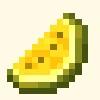
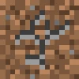
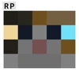
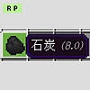
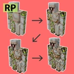
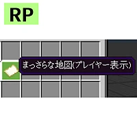
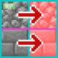
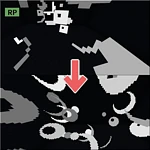
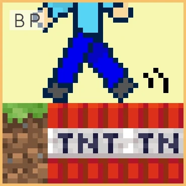
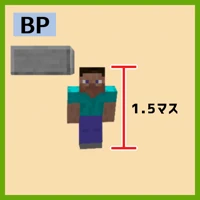

リソース+ビヘイビア

黄肉スイカ
クリームスイカとも言うらしい
ハードコアモード
死んだら終わり

壊れる土ブロック
スマブラでクラフターが使うアレ
ほうきアドオン
空飛ぶほうきを追加するアドオン
イスアドオン
座れるイスを追加するアドオン
銃アドオン
ピストルっぽいなにかを追加するアドオン
地雷アドオン
地雷を追加するアドオン
リソース

猫の目が光る
猫の目が暗い所で光るリソパ

燃料個数表示
何秒間焼けるかを表示するリソパ

JEゴーレム
HPに応じてゴーレムにヒビが入る
虹色経験値オーブ
経験値オーブが虹色になるリソパ

地図がわかりやすく
まっさらな地図 のアイテム名に「(プレイヤー表示)」を追加

紙魚入りがわかる
紙魚入りブロックが赤くなるリソパ

JE爆発テクスチャ
爆発パーティクルの見た目がJava版と同じになるリソパ
ビヘイビア

歩いたところがTNT
歩いたところがTNTに置き換わる
TNT地形破壊設定
TNTが地形を破壊するかどうかをクリーパーと同じように
ゲームモードで設定できるようになる

スニークで1.5マスに
スニークしたときの身長がJava版のように1.5マスになるアドオン。
ブロックが透過して見えてしまう欠陥あり。